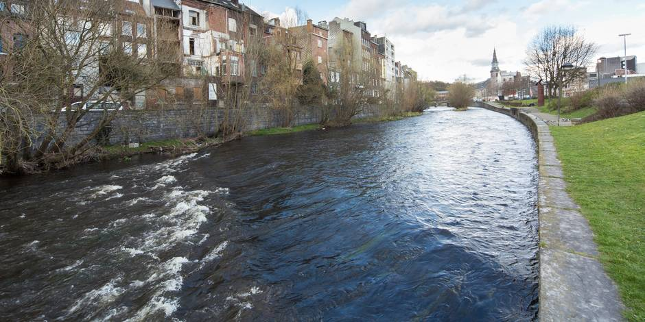

Kayak dans la Vesdre

L'eau c'est votre élément! Venez faire du kayak seul ou entre amis sur une rivière millénaire issue des hautes fagnes,La vesdre est l'une des rivière les plus belles de belgique, son eau toujours d'une transparence cristaline et ne vous laissera pas indiférent, le parcours de cette activité commencera au pied de barrage de la Gileppe et ce finira à la magnifique ville de Verviers, cette ville connue pour être la Capital Wallone de l'eau.Rendez-vous ce mardi 4 Décembre pour ce voyage en kayak de quelques kilomètres.